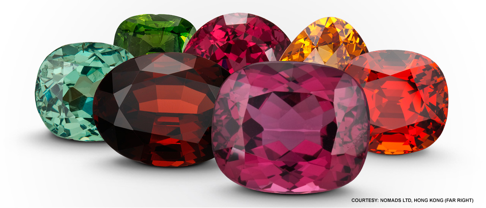

The January birthstone in a wide range of colors.
The birthstone for January is the beautiful and diverse garnet. The red colored gemstones come in a wide range of colors. There are gemstones that can change color from blue to purple.
The Latin word “pomegranate” means the similarity of the red color, which is what the name “garnet” is derived from. The Bronze Age used gemstones as abrasives. The pharaohs of ancient Egypt were adorned with a necklace studded with red garnets.
There are many countries with gemstones. During Victorian times, the red pyrope garnets were popular. The Russian royal family used green demantoid garnets to make jewelry in the 19th century. The African continent supplies most of the world’s garnet.
Namibia and Tanzania are also key sources of the rich orange-to-yellow spessartine garnets. For many years, Southern California’s Little Three mining area was known for producing this spellbinding gem, The birthstone for January is also found in Myanmar, Brazil, Iran, Afghanistan, Pakistan, India and Sri Lanka, among other countries.
There are different types of garnet on the scale between 6.5 and 7.5. The stone is more vulnerable to damage than other stones. garnets are ideal for earrings, brooches and pendants because they are not all good candidates for daily wear. Think about how you keep your jewelry safe. If you let it rub against them, it can be scratched.
It is always safe to use a soft brush with warm soapy water. Ultrasonic cleaners are usually safe, except for stones that have been fractured. It’s not a good idea to steam clean.